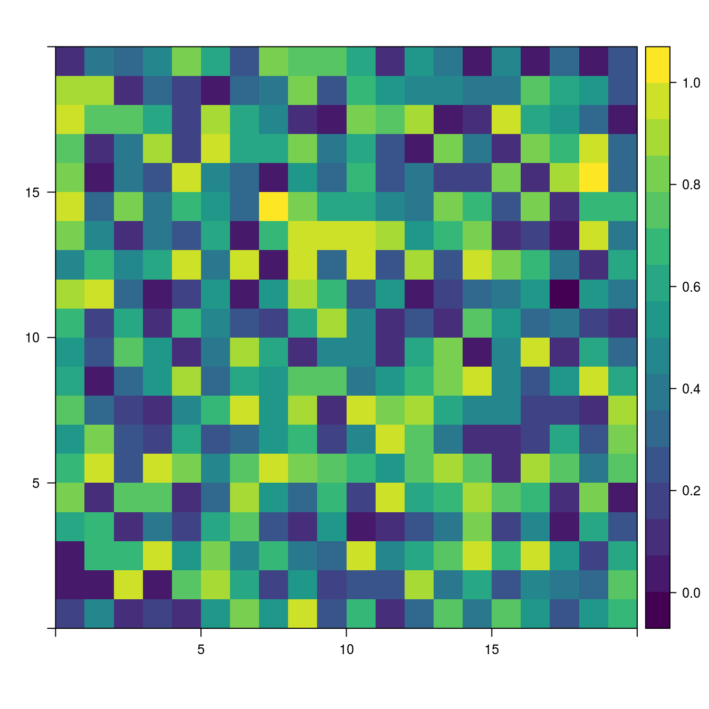
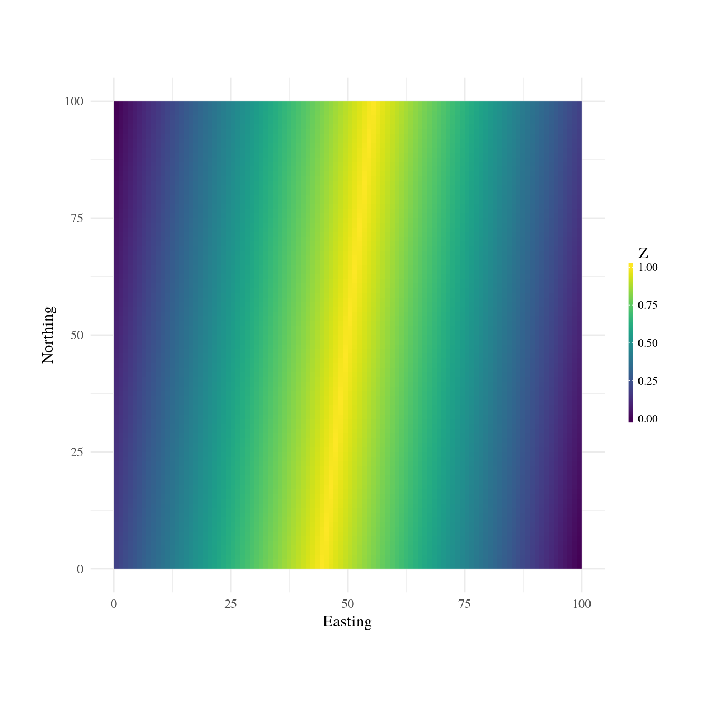
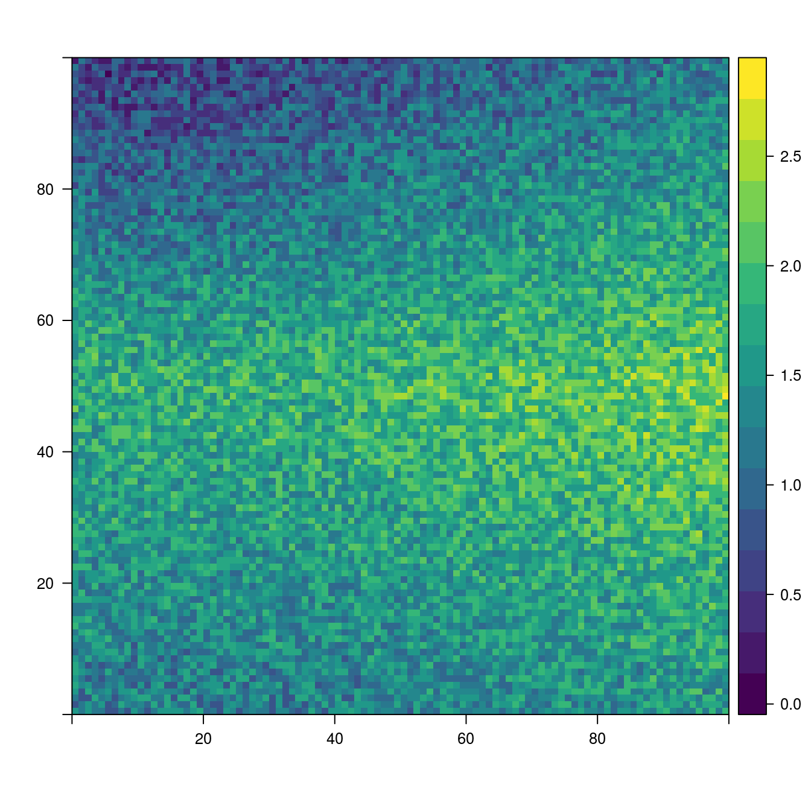
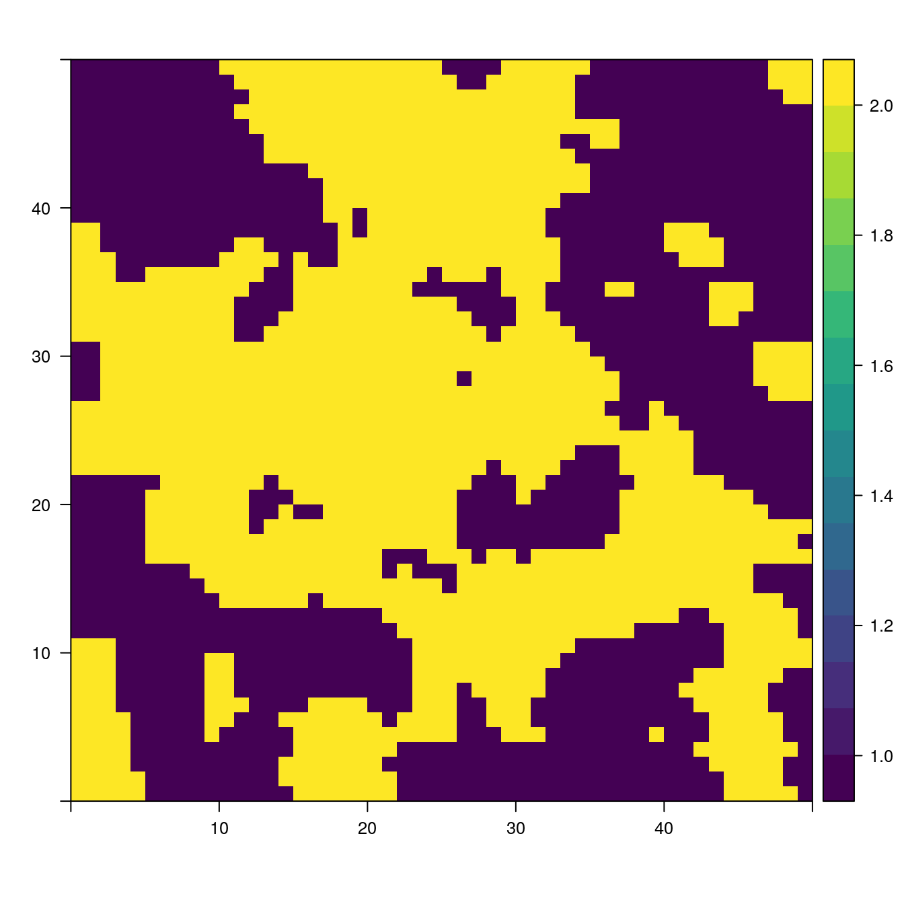

getstarted.RmdNLMR is a R package designed to generate neutral landscape models (NLMs), simulated landscapes used to explore landscape scale ecological patterns and processes. The NLMR package was designed with a similar philosophy to the Python package NLMpy (see Etherington, Holland, and O’Sullivan 2014), offering a general numeric framework allowing for a high degree of flexibility. Most of the common NLMs, as described by the relevant literature, can be produced using NLMR. Additionally, NLMR allows users to merge multiple landscapes, classify landscape elements categorically and measure basic landscape level metrics. All NLMs produced take the form of two-dimensional raster arrays with specified row and column dimensions and cell values ranging between 0 and 1. By returning raster arrays, NLMs are easily integrated into the workflow of many useful spatial analysis packages, notably the raster package.
For further information on neutral landscape models, the authors goals for this package, and additional use case examples please see the associated publication Sciani, Fritsch, Scherer and Simpkins (2018)
NLMR supplies 16 NLM algorithms. The algorithms differ from each other in spatial auto-correlation, from no auto-correlation (random NLM) to a constant gradient (planar gradients) (see Palmer 1992).
The 16 NLM algorithms are:
The basic syntax used to produce a NLM landscape is:
nlm_modeltype(ncol, nrow, resolution, ...)For example, to produce a simple random neutral landscape one could use the following code:

Multiple NLM rasters can be merged or merged together to create new landscape patterns. A single primary or base raster can be merged with any number of additional secondary rasters, with optional scaling factors used to control the influence of the secondary rasters.
The util_merge function is used to merge the rasters as in the example below:

#Create secondary landscape rasters
sL1 <- NLMR::nlm_distancegradient(ncol = 100,
nrow = 100,
origin = c(10, 10, 10, 10))
sL2 <- NLMR::nlm_random(ncol = 100,
nrow = 100)
mL1 <- pL + (sL1 + sL2)
plot(mL1)
Landscape rasters generated by NLMR contain continuous values between 0 and 1, though these can be converted into categorical values using util_classify from landscapetools. By default classes are numerical starting from 1. If non-numerical levels are required, level_names can be specified. These classes can be plotted by selecting discrete = TRUE in show_landscape.
nr <- NLMR::nlm_fbm(50, 100, fract_dim = 1.2)
nr_classified <- landscapetools::util_classify(nr, weighting = c(0.3, 0.3, 0.3))
plot(nr_classified)
Etherington, Thomas R., E. Penelope Holland, and David O’Sullivan. 2014. “NLMpy: A Python Software Package for the Creation of Neutral Landscape Models Within a General Numerical Framework.” Methods in Ecology and Evolution 6 (2): 164–68. https://doi.org/10.1111/2041-210X.12308.
Palmer, Michael W. 1992. “The Coexistence of Species in Fractal Landscapes.” The American Naturalist 139 (2): 375–97. https://doi.org/10.1086/285332.
Sciaini, Marco, Matthias Fritsch, Cédric Scherer, and Craig Eric Simpkins. 2018. “NLMR and Landscapetools: An Integrated Environment for Simulating and Modifying Neutral Landscape Models in R.” Methods in Ecology and Evolution 0 (0). https://doi.org/10.1111/2041-210X.13076.